Incident Triage AIOps Platform — Design
A reusable, declarative, human-governed automation platform for production support — incidents first.
1 Goal & principles
1.1 What it is
A governed engine that takes an incident through four re-enterable phases — assess → root cause → remediation → verify — doing the investigative toil and proposing fixes, with a human owning every consequential decision. When an incident fires, the engine opens a working session with a chat, runs the defined phases, calls whatever capabilities each phase needs (telemetry, CMDB, specialist database/network agents, runbooks), and works alongside the Major Incident Management (MIM) team — proposing, pausing for approval, resolving. It replaces a blunt vendor auto-heal with a transparent, auditable one that scales, with no vendor lock-in.
1.2 One platform, many automations
The engine, capability layer, governance, registry, human-in-the-loop, and audit are domain-agnostic. Incident-triage is the first application; provisioning, patching, capacity, and cost follow on the same core — configuration, not a rebuild.
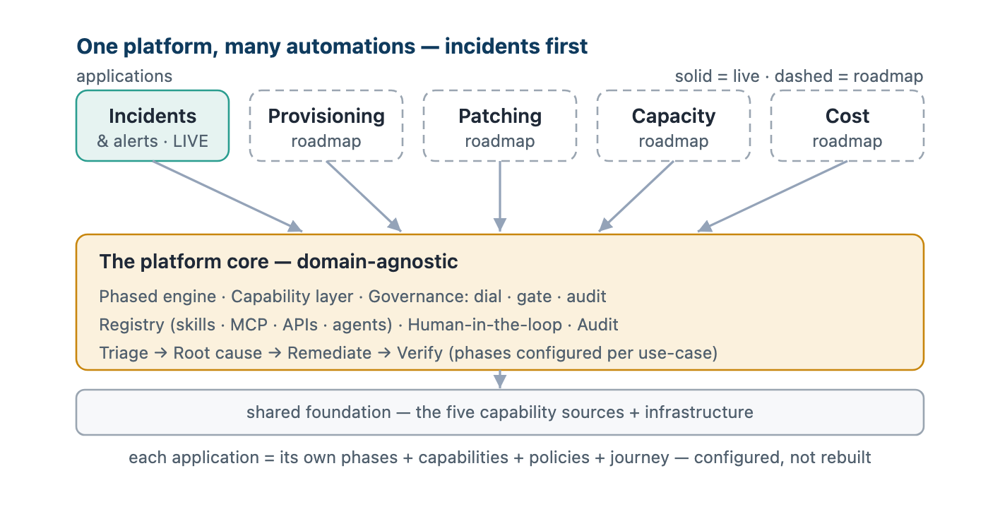
1.3 The autonomy ladder
The engine starts assisted and is dialed up per phase × service × severity — never globally, always behind the gate + audit — as evidence accrues:
- Assisted — the AI investigates and proposes; a human acts. (where every phase starts)
- Augmented — the AI acts, but a human approves each action. (the default for writes)
- Autonomous — for low-risk, high-confidence, proven actions, the AI acts within bounds and a human supervises (human-on-the-loop).
That governed progression is how a blunt vendor auto-heal is replaced safely — autonomy is earned and reversible, not switched on. Promotion is by evidence, tracked via Feedback (§5.5): a capability climbs a rung only after a run of clean incidents (no regression) for that phase × service × severity — and a single bad outcome demotes it. The thresholds (how many, what error-rate ceiling) are an org policy, set deliberately, not guessed.
1.4 Principles
- Own the domain, rent the orchestrator — phases, incident model, capabilities, and governance stay framework-agnostic, so the orchestrator (LangGraph today) stays replaceable.
- Governance at the boundary, not in the prompt — the host enforces allow/ask/deny on every capability call; the model can't talk its way past it.
- Declared vs granted — providers declare what they can do; humans grant access; anything ungranted defaults to
ask. - Goal-driven phases — each phase works toward a goal using available capabilities, not a fixed script.
- Earned, reversible autonomy — the ladder above, dialed narrowly, always behind the gate + audit.
- Delegation narrows, never widens — a specialist agent (database, network) or an incumbent (Amelia, BladeLogic) is just an A2A/API capability a phase calls: it gets only the scope granted, its consequential actions surface to the same gate, and its steps nest in the audit. Delegation is a governed capability call, not an exception.
2 Components
The building blocks and what each is responsible for. Actions (§3) and Interactions (§4) reference these by name.
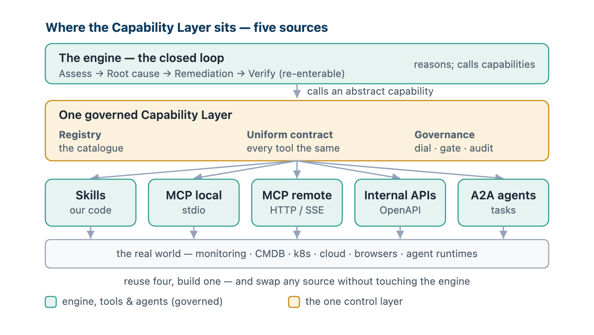
2.1 Phased engine — drives the four phases as a stateful, checkpointed graph (LangGraph) with durable execution + recovery (§4.6); a modular monolith scaled by stateless replicas (§7.1). It calls abstract capabilities, never tools directly.
2.2 Capability layer — the registry (the catalogue), per-kind adapters (skill · mcp · a2a · api), and the govern() boundary every call passes through. One uniform contract over five sources.
2.3 Playbook — the declarative, versioned process (Markdown + YAML front-matter) that drives both the engine and the workbench; change the process by editing the playbook, not the code. It holds only the workflow — access lives on the capability, engine config is runtime, RBAC is org config.
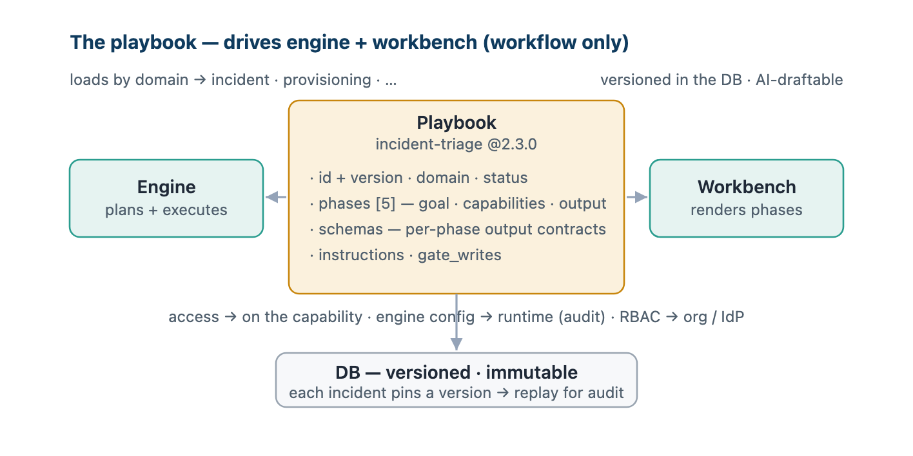
2.4 Governance — the dial (the autonomy level), the gate (allow / ask / deny, host-enforced), and the immutable audit.
2.5 Workbench — the operator UI, our own console (not Amelia's): the incident queue, the triage console (the run, cited evidence, and the inline approval surface), and the governance / playbook / dashboard screens. Full design in §6.
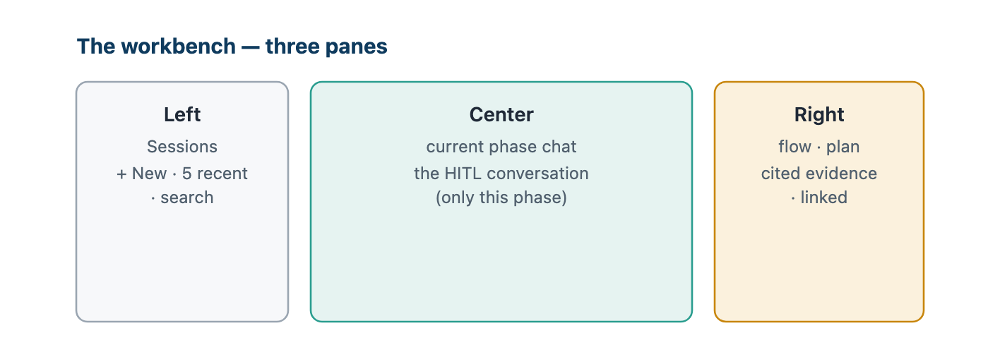
2.6 Stores — Postgres (control plane: registry, governance, engine state, audit) + MongoDB (data plane: incidents, evidence, timeline). A thin repository layer hides the split. Detail in §5.
3 Actions
What the system does — the operations the components perform.
3.1 The four phases (re-enterable)
Four goal-driven phases. Each has a goal; it works toward it with available capabilities; when the goal is met and the user approves, it advances, carrying prior phases' context forward. The order is a default, not a rigid chain — see re-enterability below.
- Assess — what broke, how bad, and the context around it: the affected service; severity/impact + customer blast radius; recent changes/deploys; dependencies and which are unhealthy; related/active incidents; owner & on-call. (Intake + Impact, merged — one picture of the situation.)
- Root cause — probable cause(s) with evidence and a confidence score: ranked candidates, never one asserted cause; correlate metrics/traces/logs against recent changes + dependency health.
- Remediation — the safest reversible fix (often: roll back the change); blast radius + rollback plan; executed behind the prod gate, with an on-failure policy.
- Verify & close — confirm recovery from the user's side (health + journey replay); resolve and close.
Re-enterable, not a rigid chain. Google SRE puts mitigation above all else — so Remediation can run before Root cause completes (mitigate now, diagnose after), and any later phase can backtrack to an earlier one to fill a gap (Verify fails → reopen Root cause; Remediation reveals the cause was wrong → back to Root cause). The phase order is the happy path; the state machine (§5.7) governs the real transitions.
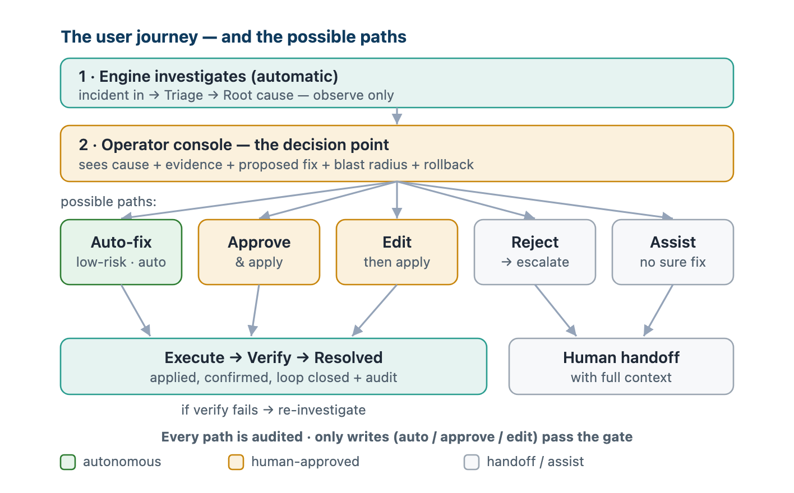
The phases are declared in the playbook — the minimal form (defaults do the rest):
---
id: incident-triage
version: 1.0.0
phases:
- id: assess
name: Assess
goal: Identify the affected service, how bad it is, what changed, and the context around it.
capabilities: [servicenow.incident.read, cmdb.read, appd.flowmap.read, slo.read, changelog.read]
output: AssessResult
- id: root-cause
name: Root cause
goal: Find the probable cause, with evidence and a confidence score.
capabilities: [appd.metrics.read, logs.search, traces.read, changelog.read]
output: RootCauseResult
min_confidence: 0.7 # below this -> gather more, or ask
- id: remediation
name: Remediation
goal: Apply the safest reversible fix.
capabilities: [k8s.rollback, k8s.restart, k8s.scale, runbook.run]
output: RemediationResult
gate_writes: true
on_failure: run-remaining # or fail-immediately
- id: verify-close
name: Verify & close
goal: Confirm recovery from the user's side, then close.
capabilities: [telemetry.read, synthetic.replay]
output: VerifyResult
---
## assess
Affected service; severity/impact + blast radius; recent changes; dependencies and which are unhealthy; related incidents; owner.
## root-cause
Correlate metrics/traces/logs with recent changes + dependency health; rank candidates; score confidence. Below min_confidence -> gather more or ask.
## remediation
Propose the safest reversible fix (often: roll back the recent change); show blast radius + rollback. Writes are gated.
## verify-close
Re-check health and replay the user journey; confirm, then close.
The playbook evolves — it doesn't have to be complete on day one. It wraps whatever capabilities the enterprise already has, discovered through the registry (§3.3) rather than predefined — we don't need to know them all up front. It starts assisted and evidence-based (the AI proposes, a human acts, every step carries a citation), then earns its way up the autonomy ladder (§1.3): more capabilities wired in → broader coverage → autonomous for the low-risk, proven actions. Because the playbook is versioned (§3.5), all of this is just new versions — the engine never changes. This is the crawl → walk → run path from a vendor auto-heal we don't control to a governed engine we do.
Per-phase operations — what each phase asks, calls, and produces
For a general application, each phase is a small set of questions answered with capabilities; what it produces is the per-phase model in §5.6. Context accumulates and the suspected location narrows as it goes — the engine walks the topology (§5.5), it doesn't run a fixed script.
| Phase | Key questions | Tools (capabilities) | Steps → output |
|---|---|---|---|
| Assess | Which service(s)? How bad (impact · priority · severity)? What changed? Blast radius + which dependencies are unhealthy? Related / prior incidents? | servicenow.incident.read · cmdb.read · appd.flowmap.read · slo.read · changelog.read | read the incident + signal → identify affected_services[] → load the topology + check health across nodes → pull recent changes → link related incidents → derive priority → AssessResult |
| Root cause | What's the probable cause? How confident? What's the evidence? What's ruled out? | appd.metrics.read · logs.search · traces.read · changelog.read | walk the topology from the symptom → correlate metrics / traces / logs with recent changes + unhealthy deps → rank candidates + score confidence → rule out alternatives → RootCauseResult |
| Remediation | What's the safest reversible fix? Blast radius? Rollback? Approved? | k8s.rollback · restart · scale · runbook.run | propose the fix (often: roll back the change) → compute blast + rollback → gate (approval) → execute (idempotent) → capture evidence → on-failure retry / escalate → RemediationResult |
| Verify & close | Did it recover? Symptom cleared? SLO recovering? Safe to close? | telemetry.read · synthetic.replay | re-check health + replay the journey → confirm symptom cleared + SLO recovering → operator confirms and closes (human) → VerifyResult |
How context builds. Assess establishes the topology + affected services; Root cause walks that topology, narrowing suspected_locus with evidence; Remediation acts on the located cause; Verify confirms from the user's side. Each step's tool call + evidence (§5.5) accrues into the shared context — so a backtrack (§5.7) re-enters an earlier phase with more context, not less, and a multi-app incident is worked by walking across apps and layers until the locus is found.
3.2 The in-phase loop (identical every phase)
Propose → approve/refine → execute → report → approve. During execute, each step: a permission gate (Allow / Allow-always-this-session / Deny — reads usually auto, writes ask); the run (often a sub-agent); a possible mid-run pause for your input (the session is stateful); and a capture of result + citation + evidence (screenshots/summaries included). If it can't complete, it re-plans → you approve → resumes. Every plan — first, refined, or re-planned — passes through your approval before it runs. All captured to the DB as JSON for handoff + audit.
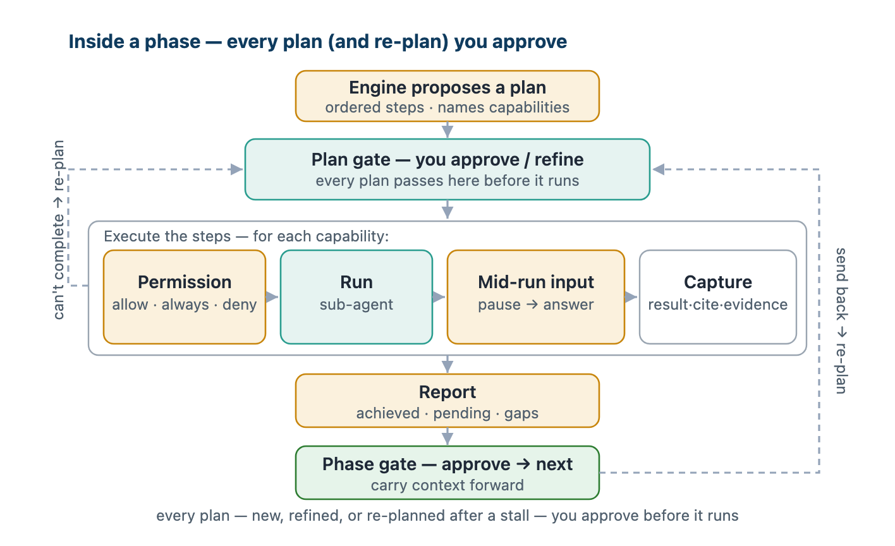
3.3 Capability invocation — declare + call, per kind
The engine is kind-blind: it always calls invoke(capability_id, input). The registry resolves the provider, the same governance boundary runs, then a per-kind adapter does the transport. Only two things differ per kind — how the adapter discovers capabilities (declare()) and how it calls them.
| Kind | Discovery (declare) | Invocation (call) | Effect source | Trust |
|---|---|---|---|---|
skill | code registration | in-process function call | author declares (known) | trusted |
mcp_local | spawn + tools/list | tools/call over stdio | unknown (hints untrusted) | per-server |
mcp_remote | connect URL + tools/list | tools/call over HTTP/SSE | unknown | per-server |
api | OpenAPI ops (or hand) | HTTP request (verb+path+auth) | HTTP verb heuristic | per-service |
a2a_agent | Agent Card skills | message/send task (2-way) | unknown (classify) | per-agent |
- skill — our own code, in-process; no network, effect known, trusted. Where trust- or latency-sensitive work goes.
- mcp_local / mcp_remote — the same MCP protocol (
initialize→tools/list→tools/call); only the transport differs (a spawned subprocess over stdio vs a URL over HTTP/SSE). The host mediates every call. - api — each OpenAPI operation becomes a capability; the HTTP verb seeds the effect (GET→read, POST/PUT/DELETE→write), still ratified by us.
- a2a_agent — discovered from its Agent Card; invoked as a two-way task that can stream and pause (see §4.2).
3.4 The governance decision
Governance at the boundary, not in the prompt. For every call the host reads the capability's effect and access, applies the dial, and decides allow / ask / deny — reads usually flow through, writes meet the gate, everything is audited. How access resolves from the policy and the defaults is in §5.3; the call sequence is §4.1.
3.5 Playbook authoring, validation & lifecycle
A playbook is two halves in one file: YAML front-matter — the machine contract the engine executes (phases, the capabilities each may use, gates, thresholds, output schemas) — and a Markdown body whose ## <phase-id> sections are the agent's guidance for that phase: plain-language intent the model follows while pursuing the phase goal. Front-matter is what is allowed and required; the body is how to think about it. (Full schema in §5.4.)
How a phase advances. A phase is goal-driven, not a script: the engine works the goal with the phase's capabilities until it is met, the operator approves, and any advance_when / min_confidence condition holds — then it carries context to the next phase. If a step fails, the engine first retries transient errors (per the playbook's retry policy — up to max, with backoff); a permanent error, or exhausted retries, then hits on_failure (stop, or finish the independent steps then report) and the error_handler (escalate / hand to manual). A phase may fire a benign on_complete hook (e.g. attach_session); closing the incident is a human action, not a hook — in Verify & close the operator confirms the fix held and closes it, so an incident is never auto-closed. Phases are re-enterable, so a later phase can backtrack to an earlier one — the full transition set is the state machine (§5.7).
Lifecycle. One playbook.schema.json validates every playbook on author (a draft saves with lint warnings), on publish (rejected if it names an unknown capability or a missing schema), and on load. Published = immutable; changes are new versions, change-controlled (reviewed before publish) with a changelog entry per version. Each incident pins playbook@version and the capability manifest it ran against, so opening a past incident replays the exact process and tools → regulator-grade audit. A new playbook can be AI-drafted from a reference → review → publish.
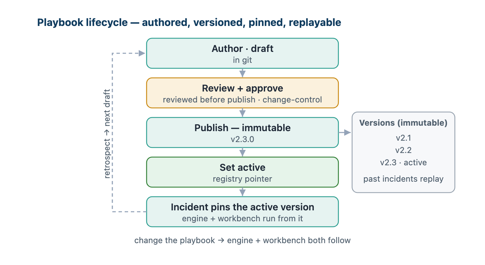
The complete reference playbook — the contract (front-matter) + the guidance (body), all four phases. §3.1 is the minimal form; this is the full one:
---
id: incident-triage
version: 1.0.0
domain: incident
status: active
owner: iro-sre
changelog:
- { version: 1.0.0, date: 2026-06-17, by: iro-sre, note: "First published process." }
defaults: # inherited by every phase unless it overrides
on_failure: run-remaining
retry: { max: 3, backoff: exponential } # transient errors only; permanent -> escalate
unknown_access: ask # this playbook's default gate for unknown-effect capabilities (deny|ask|allow)
phases:
- id: assess
name: Assess
goal: Identify the affected service, how bad, what changed, and the context.
capabilities: [servicenow__incident.read, cmdb__read, appd__flowmap.read, slo__read, changelog__read]
output: AssessResult
on_complete: attach_session
- id: root-cause
name: Root cause
goal: Find the probable cause, with evidence and a confidence score.
capabilities: [appd__metrics.read, logs__search, traces__read, changelog__read]
output: RootCauseResult
min_confidence: 0.7
advance_when: confidence >= min_confidence
- id: remediation
name: Remediation
goal: Apply the safest reversible fix.
capabilities: [k8s__rollback, k8s__restart, k8s__scale, runbook__run]
output: RemediationResult
gate_writes: true # every write here is gated
on_failure: fail-immediately # override the default
error_handler: { action: escalate, to: on-call, via: pagerduty }
- id: verify-close
name: Verify & close
goal: Confirm recovery from the user's side, then close.
capabilities: [telemetry__read, synthetic__replay]
output: VerifyResult
schemas: # the output contracts, versioned with the playbook
AssessResult: { type: object, required: [affected_services, impact, priority] }
RootCauseResult: { type: object, required: [candidates, status] }
RemediationResult: { type: object, required: [action, approval, execution] }
VerifyResult: { type: object, required: [verification_outcome, resolution] }
---
## assess
Identify the affected service from the signal. Pull its CMDB record and AppD flow map.
Set impact and urgency → priority (derived, overridable). Compute blast radius
(services, users, customers). Read the SLO + burn rate. List changes in the last 24h and
the dependencies that are unhealthy. Link related / similar / caused-by incidents.
## root-cause
Correlate metrics, traces, and logs against the recent changes and the unhealthy
dependencies. Produce RANKED candidates — never one asserted cause — each with evidence
and a confidence score. If the top candidate is below min_confidence, gather more
evidence or ask the operator; do not advance on a guess.
## remediation
Propose the safest reversible fix — usually rolling back the suspect change. Show blast
radius and the rollback plan. Every write is gated. If a step fails, stop and hand to the
error_handler (escalate to the on-call).
## verify-close
Re-check health and replay the user journey (synthetic). Confirm the symptom is cleared
and the SLO is recovering. Resolve, then close.
3.6 Worked example — a driven capability (AppD browser)
End to end for the generic/driven case — and a validation of the model: Provider (status registered → connected) → discovered DeclaredCapability rows → CapabilityPolicy by default (read→allow, write→ask, overridable) → governed invoke.
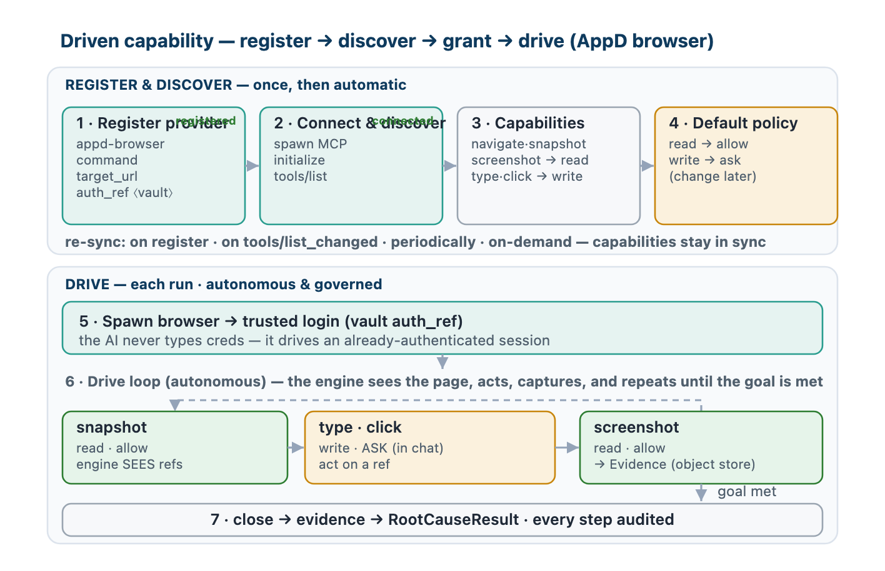
- Register — one provider row (
appd-browser:command · target_url · auth_ref);auth_refis a vault reference, never the secret. - Discover — on register the engine spawns the MCP and
tools/listregisters the capabilities; it re-syncs ontools/list_changed· periodically · on-demand. - Grant — default policy by trust × effect (read→allow, write→ask); a human can change it later.
- Drive — a trusted login uses
auth_ref(the AI never types creds), then the engine loops snapshot (read) → act (write, asks in chat) → capture (read → Evidence) until the goal; then close + audit.
Concretely — the one provider you author, and the calls the engine makes:
// Provider — the only row you write
{ "id":"appd-browser", "kind":"mcp_local",
"connection": { "command":["npx","@playwright/mcp@latest","--headless","--isolated"],
"target_url":"https://appd.internal", "auth_ref":"vault:appd_svc" },
"trusted": true }
// discovered + granted: navigate·snapshot·screenshot → read·allow | type·click → write·ask
// the engine drives (autonomous, gated per write):
login(auth_ref) # trusted · vault · AI never types creds
invoke("appd-browser__browser_navigate", {url:"…/services"}) read → allow
invoke("appd-browser__browser_snapshot", {}) read → allow # SEE the refs
invoke("appd-browser__browser_type", {ref, text:"payments-api"}) write → ASK
invoke("appd-browser__browser_click", {ref}) write → ASK
invoke("appd-browser__browser_take_screenshot", {}) read → allow → Evidence
Local vs remote MCP — same flow, one line of difference. The driven flow above is mcp_local (the engine spawns the server). A hosted MCP is mcp_remote — identical protocol (initialize → tools/list → tools/call), capabilities, governance, and call path; only the provider's connection changes:
// mcp_local — spawn it on the box
{ "id":"appd-browser", "kind":"mcp_local",
"connection": { "command":["npx","@playwright/mcp@latest","--headless"] } }
// mcp_remote — connect to a hosted server (same tools, same calls)
{ "id":"appd-mcp", "kind":"mcp_remote",
"connection": { "url":"https://mcp.internal/appd", "auth":{"type":"bearer","ref":"vault:appd_mcp"} } }
// discovery + invoke unchanged: tools/list → capabilities; tools/call over HTTP/SSE instead of stdio
When to use which: mcp_local for the simplest path (spawn on the engine box, no extra service); mcp_remote when the MCP is a shared/hosted service — scaled, patched, and owned independently, reachable by many engine replicas. The engine, the capabilities, and the gate are identical either way.
3.7 Worked example — predefined Playwright scripts in a Python module
What. A reviewed Python module of Playwright scripts, bundled in the engine (e.g. skills/replays.py). Each function is a parameterized flow — service_name in, evidence out — that runs as one governed call.
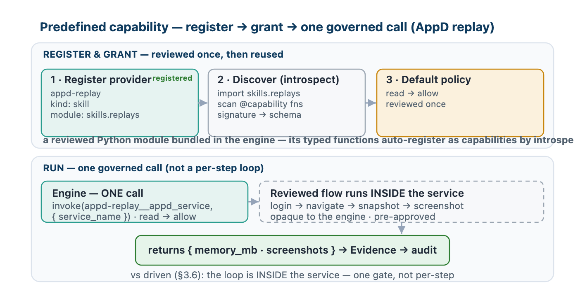
How it registers & discovers. You mark each function a capability; on load the engine imports the module, scans for the marked functions, and introspects the typed signature into the input_schema — no hand-written schema, and adding one never touches the engine.
# skills/replays.py — reviewed Playwright scripts, bundled in the engine
@capability(effect="read") # marks it a capability + declares the effect
async def appd_service(service_name: str, window: str = "1h") -> dict:
"""Log into AppD, open the named service, capture the memory + error panels.""" # → description
async with browser_context(storage_state=vault.get("appd_svc")) as page: # vault login
... # navigate · screenshot
return { "memory_mb": ..., "screenshots": [save_blob(png)] }
@capability(effect="read")
async def appd_dependencies(service_name: str) -> dict: ...
Data model — discovered from the module:
// Provider — one row, points at the module
{ "id":"appd-replay", "kind":"skill", "connection": { "module":"skills.replays" }, "trusted": true }
// DeclaredCapability — REGISTERED by introspection (one per @capability function)
{ "id":"appd-replay__appd_service",
"description":"Log into AppD, open the named service, capture the memory + error panels.",
"input_schema": { "type":"object", "required":["service_name"],
"properties": { "service_name":{"type":"string"}, "window":{"type":"string","default":"1h"} } },
"effect":"read" } // CapabilityPolicy default → allow
// also discovered: appd-replay__appd_dependencies
Use. The engine makes one governed call:
invoke("appd-replay__appd_service", { "service_name":"payments-api" })
→ read → allow → the function runs the reviewed flow (login · navigate · capture)
→ { memory_mb, screenshots } → Evidence + RootCauseResult + audit
Adding a script later = add a decorated function to the module → it auto-registers on next load (a build, since it's bundled); the engine never changes. Driven (§3.6) vs predefined (§3.7): driven = many primitive calls, gated per write (exploratory); predefined = one call, the loop is inside the reviewed function, gated once (deterministic) — same registry, same invoke contract.
3.8 Registering a skill — the Agent Skills (SKILL.md) standard
We don't invent a skill format — we adopt the Agent Skills open standard (agentskills.io; Anthropic's Skills). A skill is a folder with a SKILL.md (YAML frontmatter + instructions) plus optional bundled scripts/resources. This is the standard packaging around the bare module of §3.7 — same scripts, now wrapped with discovery metadata, instructions, and a tool scope.
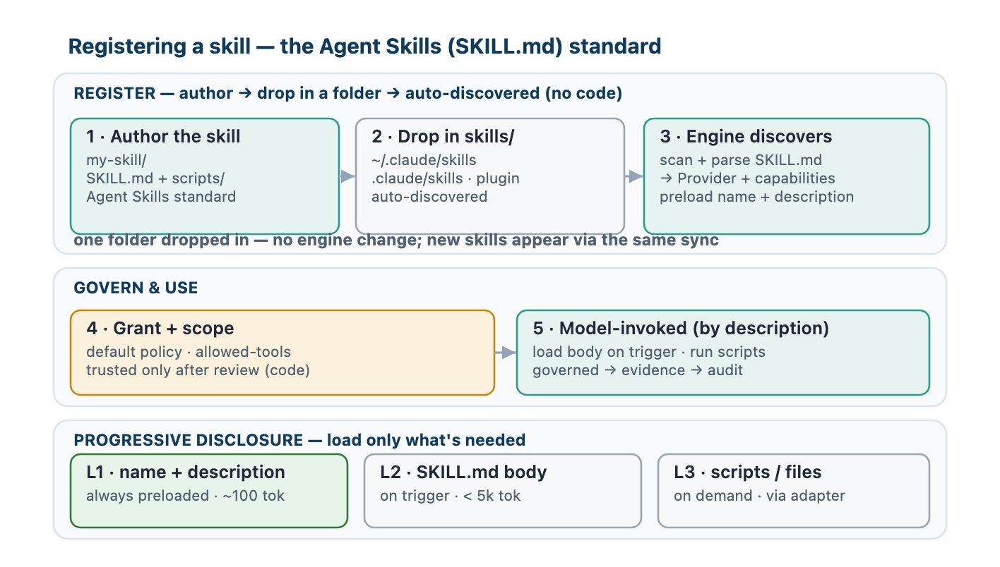
The SKILL.md spec (verified): required name (≤64 chars, lowercase/digits/hyphens, not "anthropic"/"claude") and description (≤1024 chars, says what it does + when to use it); optional allowed-tools and disable-model-invocation.
incident-replays/ # the skill folder (the unit you register)
├── SKILL.md
└── scripts/
└── appd_replay.py # the Playwright flow
# SKILL.md
---
name: appd-replay # ≤64 · lowercase-hyphen
description: Capture AppD evidence for a service — log in, open the named service,
screenshot the memory + error panels. Use when investigating a service in AppDynamics.
allowed-tools: [playwright, vault.read] # the capabilities this skill may use
---
# AppD replay
Steps the engine follows… # the body — loaded only when the skill is triggered
How a user registers it: drop the folder in a skills directory — auto-discovered, no code change (~/.claude/skills, .claude/skills, or a plugin). New skills appear via the same sync that discovers any provider.
How the engine maps it (data model):
SKILL.md | Our model |
|---|---|
the folder + name | Provider (kind: skill, connection:{path}) + namespace |
description | DeclaredCapability.description — preloaded for selection (Level 1) |
| bundled scripts | a DeclaredCapability per script (input_schema introspected) — Level 3 |
| SKILL.md body | the skill's instructions — loaded on trigger (Level 2) |
allowed-tools | the capabilities this skill may use → policy scope |
Progressive disclosure (the standard's efficiency trick): L1 name+description always preloaded (~100 tok/skill) · L2 the body on trigger (<5k tok) · L3 scripts run via the adapter on demand (output only). Governance: allowed-tools scopes what it may call; a skill bundles executable code, so it's trusted only after review (supply-chain) — its capabilities default to ask / pending_review until granted. Invocation: model-invoked — the engine selects the skill by its description, loads the body, and runs its scripts through the governed call path (§4.1).
3.9 Worked example — an API capability (OpenAPI → operations)
What others do, and what we do: an api provider points at a REST service with an OpenAPI spec, and each operation becomes a capability — the same pattern every "tools-from-OpenAPI" generator uses. No per-endpoint code.
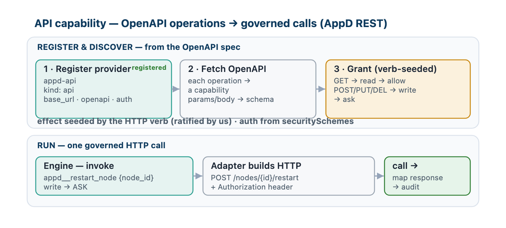
Register + discover. One provider row; the engine fetches the OpenAPI and generates a capability per operation — input_schema from the operation's parameters + requestBody, effect seeded from the HTTP verb (GET/HEAD → read; POST/PUT/PATCH/DELETE → write), auth from securitySchemes.
// Provider
{ "id":"appd-api", "kind":"api",
"connection": { "base_url":"https://appd.internal/api", "openapi":"/openapi.json",
"auth": {"type":"bearer","ref":"vault:appd_api"} }, "trusted": true }
// discovered from the spec — one per operation:
{ "id":"appd-api__get_metrics", "input_schema":{ …service,metric,window… }, "effect_hint":"read" } // GET → read → allow
{ "id":"appd-api__restart_node", "input_schema":{ …node_id… }, "effect_hint":"write" } // POST → write → ask
// invoke:
invoke("appd-api__restart_node", { "node_id":"n-42" })
→ write → ASK → adapter builds POST {base_url}/nodes/n-42/restart + Authorization: Bearer …(vault)
→ call → validate response → Evidence + audit
Data model: Provider(kind:api) + a DeclaredCapability per operation (schema from the spec) + policy (verb-seeded default, human-overridable). The verb is a hint — we ratify the effect, exactly as for every other kind. No OpenAPI? Hand-declare the few capabilities; everything downstream is identical.
3.10 Worked example — an A2A agent capability (Agent Card → task)
Grounded in the A2A protocol (build to v0.3.0): the agent is reached by URL and publishes an Agent Card at /.well-known/agent-card.json whose skills are its callable actions; you invoke a task — two-way and streaming.
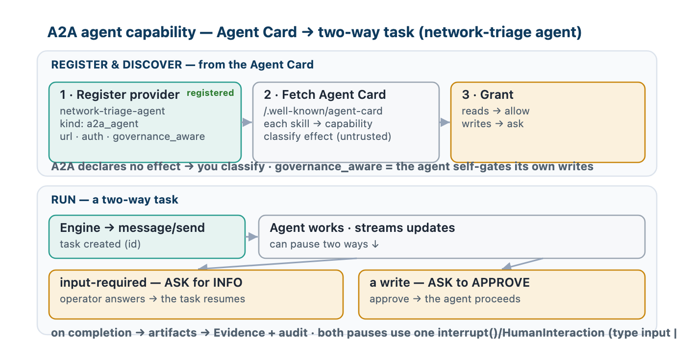
Register + discover. One provider row (URL + auth + governance_aware); the engine fetches the Agent Card and maps each skill → a capability. A2A declares no effect, so you classify it.
// Provider
{ "id":"network-triage-agent", "kind":"a2a_agent",
"connection": { "url":"https://a2a.internal/net", "auth":{"type":"oauth2"} },
"governance_aware": true, "trusted": false }
// discovered from the Agent Card skills (effect unknown → you ratify):
{ "id":"network-triage-agent__diagnose", "effect_hint":"unknown" } // → read → allow
{ "id":"network-triage-agent__failover", "effect_hint":"unknown" } // → write → ask
// invoke = a two-way task:
invoke("network-triage-agent__diagnose", { "incident":"INC-2381" })
→ message/send (task created) → agent works, streams updates
→ may pause: input-required (asks the operator for INFO) | approval (gate a write)
→ completed → artifacts → Evidence + audit
The two pauses — both via interrupt() and one HumanInteraction (type: input | approval): input-required = the agent needs information (the operator answers, the task resumes); approval = a write meets the gate. A write the agent performs itself is gated by plan-then-approve when governance_aware, or kept read-only / least-privilege when opaque. Data model: Provider(kind:a2a_agent, governance_aware) + a DeclaredCapability per skill + policy.
3.11 The capability layer holds — all five kinds
Every kind registers, discovers, governs, and invokes through the same data model and the same call path (§4.1) — only the adapter differs, and no kind needed a new field.
| Kind | Discover | Invoke | Effect source | Worked example |
|---|---|---|---|---|
skill | module introspection / SKILL.md | in-process call | author-declared | §3.7 · §3.8 |
mcp_local | spawn + tools/list | tools/call (stdio) | classify | §3.6 |
mcp_remote | connect URL + tools/list | tools/call (HTTP) | classify | §3.6 (same, URL connection) |
api | OpenAPI operations | HTTP request | HTTP verb | §3.9 |
a2a_agent | Agent Card skills | message/send task | classify | §3.10 |
One Provider + DeclaredCapability + CapabilityPolicy + the §4.1 call path covers all five — registration, discovery (with default-grant), governance, invocation, and teardown (§4.5). The capability layer and its data model are validated and complete.
4 Interactions
How the components talk — the runtime flows.
4.1 The one call path — and how it loops
Every capability call — any kind — takes the same governed path. This is one step:
invoke(cap_id, input):
cap = resolve(cap_id) # → provider · kind · effect · access
validate(input, cap.input_schema) # reject bad args before anything runs
gate = govern(cap.effect, cap.access) # allow · ask · deny
deny → blocked
ask → interrupt() → operator approves / edits / denies (in the chat)
(reads usually allow → pass straight through)
output = adapter[cap.kind].call(cap, input) # ← the only kind-specific step
validate(output, cap.output_schema) # if declared
capture output → Evidence ; step → immutable audit
return output
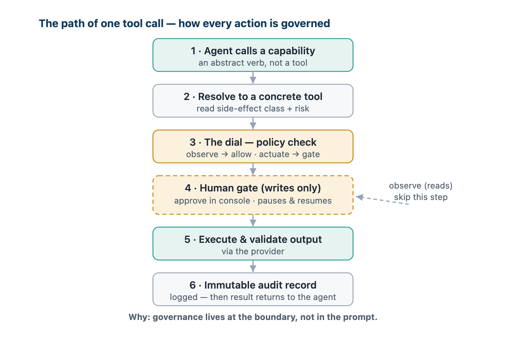
The boundary is identical for every kind; the transport is the only variable — swap an MCP tool for a skill and nothing in the engine changes.
It loops for a driven capability. The self-driving AppD browser (§3.6) wraps that one call in a loop — observe → reason → act → repeat until the goal — with the gate firing per call (the gate itself is unchanged):
drive(goal): # "get payments-api memory from AppD"
login(auth_ref) # trusted, once (vault)
while not goal_met and steps < limit:
view = invoke("appd-browser__browser_snapshot", {}) # OBSERVE read → allow
action = reason(goal, view) # model picks next step + ref
invoke(action.cap, action.input) # ACT navigate→allow · type/click→ASK
goal_met = check(goal, view)
invoke("appd-browser__browser_take_screenshot", {}) # capture read → Evidence
close(); return RootCauseResult(evidence)
So the call path is the inner governed unit; the loop is the driven mode — reads flow through, writes pause for approval, every iteration audited. A predefined capability (§3.7) is the opposite: one invoke, with the loop inside the reviewed function — the engine doesn't loop at all.
4.2 Human-in-the-loop — one gate, plus A2A's mid-run ask
- The ask — every kind. A capability with
access = askpauses before the call and surfaces in the chat, where an authorized user can approve, pick an option, or refine — not just yes/no — then it proceeds.allowflows straight through; the gate is host-side, the provider never decides it. - Mid-run input — A2A only.
skill,mcp_*, andapiare request→response: one shot, nothing to ask back. Only an A2A agent runs a multi-step task, so only it can hitinput-requiredand ask the operator a question mid-run.
Both pauses flow through the one HumanInteraction record (type: approval | input) and the same interrupt()/resume machinery — so the engine and workbench handle them uniformly. The whole HITL story: one gate for writes across all five kinds; one extra mid-run "ask" that only A2A can trigger.
4.3 Incident intake & the run, end-to-end
From signal to run. The front door is an ingestion endpoint: a Signal arrives from monitoring (a webhook from AppD / Splunk / Prometheus / PagerDuty), normalized to {source, service, severity_hint, fingerprint, payload}. The engine dedups & correlates by fingerprint + service + time-window — a matching open incident attaches the signal (no duplicate); otherwise it creates one, sets an initial severity (rules) and owner (CMDB on-call), and starts a Run on the domain's playbook@version → Assess begins. This read-only intake is the only un-gated step; everything consequential downstream still passes the gate (§4.4).
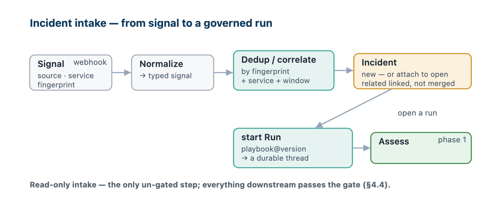
One separate triage session per incident (no merging). A Session is the run: it moves through the phases, and each phase produces a PhaseResult whose steps record every capability call, the evidence it produced, and any approval — so the trail reads session → phases → steps → evidence → timeline. Incidents link to others (related-active / similar-past-with-fixes / caused-by) for leverage + learning, never merged. The full entities are in §5.5; a worked row-by-row run is in §5.9.
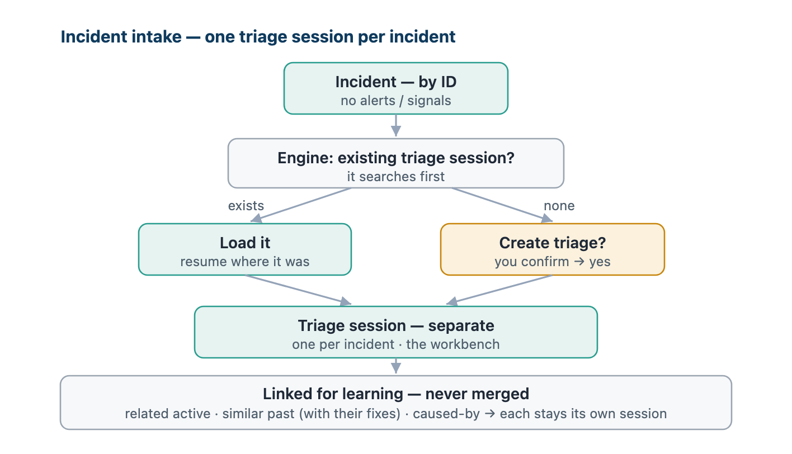
4.4 Access & approval
Access is layered on what the bank already runs, plus the one gate the platform adds — three layers, nothing duplicated:
- 1 · Domain access — an AD group. Membership in a domain's AD group (incident-triage, provisioning, …) is what lets a user in. The platform checks the group; it does not build its own RBAC — it leverages enterprise IAM.
- 2 · Capability layer. The registry of what can be done; each capability carries an access —
allow · ask · deny(§5.3). - 3 · The ask. When a capability's access is
ask, the engine pauses and surfaces it in the chat, where an authorized user can approve, choose an option, or refine — not just yes/no. The AI proposes but never approves its own action; every proposal, decision, and outcome is audited.
The gate is the governance layer (what's permitted); the interaction — the asking, the options, the refining — lives in the chat (§3.2). Keep them distinct.
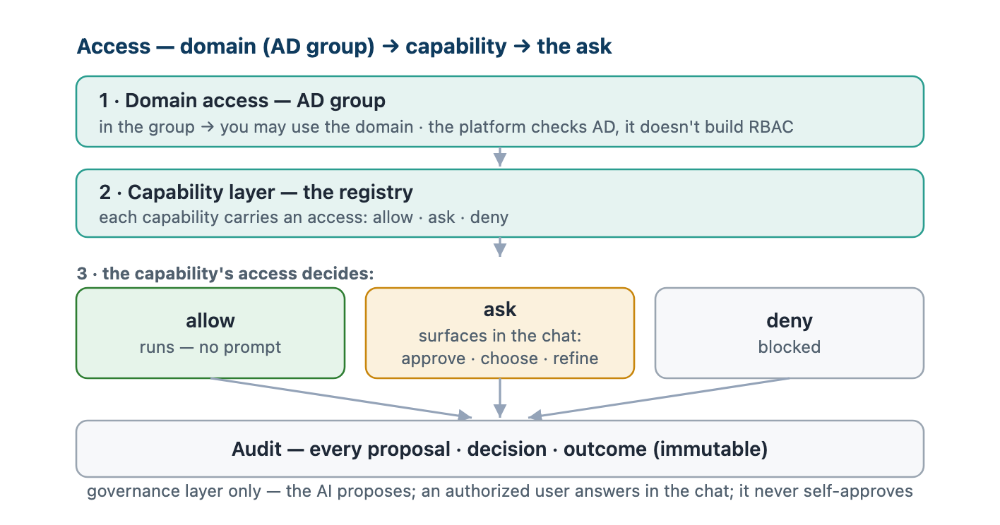
4.5 Session & resource lifecycle — clean, enforced teardown
Two things end, both deterministically — the engine session (the run) and the tool resource leases it held (the stateful ones: a Playwright browser, an open MCP connection). Cleanup is the host's job — a finally-style guarantee — never something the model has to remember.
Scoped leases + enforced teardown. A stateful tool is acquired as a lease bound to a scope (the phase, or a browser session inside the driven loop). The engine tracks open leases and tears them down when the scope exits — on success, error, cancel, or timeout:
lease = acquire(appd-browser) # spawn MCP + browser context
try:
drive(goal) # the loop
finally:
lease.close() # ALWAYS — close tabs → context → browser → kill subprocess
# idempotent · audited
Browser teardown order: pages (tabs) → context → browser → terminate the MCP subprocess — idempotent (safe if already gone) and audited. The model never calls close itself; the finally runs even if it forgets, errors, or the operator rejects a step.
| How the session ends | What the engine does |
|---|---|
| Normal — operator closes at verify-close | close all leases · finalize audit · checkpoint · SessionStatus = completed |
| Canceled / failed | same teardown path · status = canceled | failed |
| Paused (HITL) — short | hold the lease (browser stays open) · resume in place |
| Paused — long / abandoned | a reaper closes the lease past its TTL (scheduler, leader-elected) · re-acquire idempotently on resume (re-login from vault) |
Scoped leases + finally teardown + idempotent close + a TTL reaper — tabs/browser/subprocess are always closed when the work or the session ends, abandoned sessions are reclaimed, and crashes are covered because the lease is tied to the session, not to the model. No orphaned browsers.
4.6 The engine — durable execution & recovery
The engine is the runtime that drives a playbook against an incident. It is built for durable execution: the run's state is persisted at every step, so a run survives pauses, crashes, and hours-long waits — and never double-executes a write. LangGraph is the framework (§7.3); the durability bar is Temporal/Conductor-grade.
How a run executes. Load playbook@version → build the phase graph → open a Run (a durable thread). At each step the engine writes a checkpoint — a snapshot of where it is, what's next, and what's pending. The persisted state, not memory, is the source of truth. An append-only event log records every transition — it is both the audit trail and the recovery log. A capability call (an Action) runs once; its result is recorded as Evidence, and on replay the recorded result is reused, never re-run.
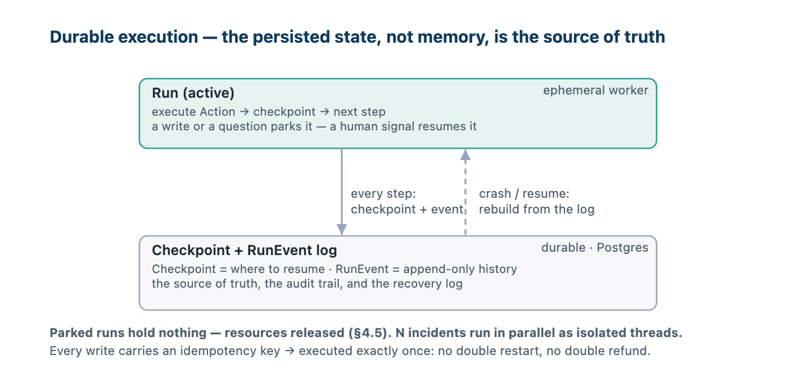
Pause & resume (human-in-the-loop). A write — or an agent's question — interrupts the run; the engine persists the waiting state and releases held resources (§4.5), so a parked run holds nothing. A human signal — an approval or an answer (the HumanInteraction) — resumes it from the checkpoint.
Crash recovery. If a worker dies mid-run, another reloads the last checkpoint and continues. Completed actions are not re-executed (their results are in the log); everything else is guarded by idempotency.
Retry & idempotency — bank-grade. A failed action retries from itself, not from the top of the run. Every write carries an idempotency key, so a retry or a crash-replay executes it exactly once — no double restart, no double refund. This is the one place we go beyond stock LangGraph checkpoints, which alone do not guarantee exactly-once side effects.
Backtrack & time-travel. Because every step is checkpointed, re-entering an earlier phase (§5.7) restores from that phase's state — time-travel, not a cold restart.
Concurrency. Each incident is an independent run, isolated from the rest; many run in parallel. Per-run leases + the TTL reaper (§4.5) bound resources.
The use cases this has to cover, end to end:
| Use case | What the engine does |
|---|---|
| Cold start | Incident opens → create a Run, load the playbook, run Assess. |
| Pause & resume | Write gate → interrupt → durable park (no resources held) → approval signal → resume from checkpoint. |
| Crash recovery | Worker dies → another reloads the last checkpoint → continues; no work lost, no action repeated. |
| Action retry | Transient failure → retry the action (not the run); idempotency key → no duplicate side effect. |
| Partial multi-target | Some targets fail → partial → retry the failed items only (§5.7). |
| Backtrack | Verify fails → restore Root cause from its checkpoint and re-open it. |
| Long park | Run waits hours for a human → holds nothing → the reaper enforces TTL → resumes on the signal. |
| Concurrent incidents | N incidents → N isolated runs in parallel, each with its own thread + leases. |
| Idempotent write | The same remediation invoked twice (retry / replay) → executed once. |
Grounded in: Temporal (append-only event history, replay, activities run once, signals for external input); LangGraph (thread + checkpoint / StateSnapshot, interrupt/resume — our framework); Netflix Conductor (workflow = state-machine of tasks, central persisted state as source of truth, retry-from-task, exactly-once); idempotency / retry-safety patterns for distributed workflows. The one gap we close ourselves: stock checkpoints are not exactly-once → we add idempotency keys + the event log + the reaper.
5 Data model
Three clusters — the governed Registry, the versioned Playbook, and the Run — across two storage planes.
5.1 Storage planes
The control plane lives in Postgres: config/registry, providers, capabilities, policies, playbooks, session + checkpoint, audit, decisions, and the plan & execution record — everything you search, join, gate, and audit on. Inside Postgres, scalar/spine fields (ids, FKs, enums, status, timestamps) are relational columns, and variable documents are JSONB with their searchable fields projected to indexed columns — so you keep the full JSON and a fast relational view. The data plane lives in MongoDB: the rich, evolving documents — incident records, evidence, context snapshots, and the timeline feed (high write volume, flexible nested shape). The playbook keeps its MD + front-matter form in Postgres (body_md text + parsed columns + phases JSONB); large binaries (screenshots) go to an object store, referenced by id.
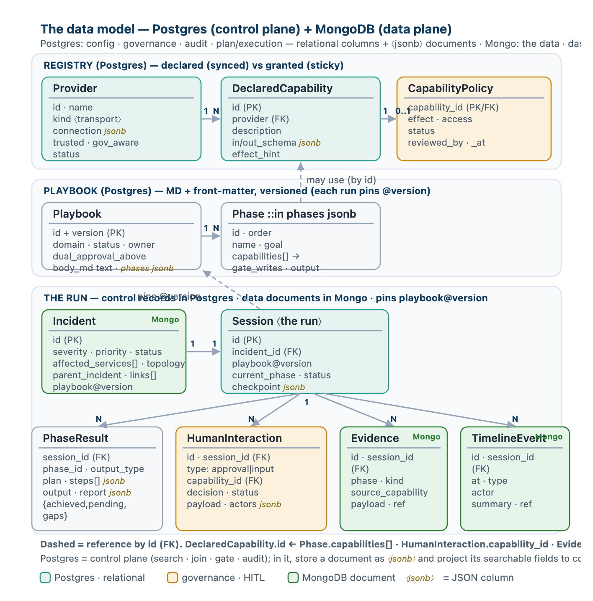
5.2 Enumerations
Each enum is a closed set (a Postgres enum type) — the only legal values, so governance and the UI stay unambiguous.
| Enum | Possible values | What each means · why it exists |
|---|---|---|
ProviderKind | skill · mcp_local · mcp_remote · a2a_agent · api | The transport — how we reach a provider; it selects the adapter. Deliberately not "what it does" (a browser is just an MCP or a skill). |
ProviderStatus | registered · connected · disabled · error | Connection lifecycle. The engine only calls connected providers; error/disabled are skipped and surfaced. |
Effect | read · write · unknown | Side-effect class — the one fact governance keys on. unknown exists because A2A never declares effect and MCP rarely does, so it's the honest default until ratified. |
Access | allow · ask · deny | The gate the host enforces per call — allow runs, ask prompts an authorized user, deny blocks. |
PolicyStatus | active · pending_review | Whether a human has ratified the policy; pending_review feeds the review queue (the default for new / untrusted). |
HumanInteractionType | approval · input | A gate (authorize a write) vs a question (the agent needs info) — two different pauses, one record. |
InteractionStatus | pending · resolved · expired | Lifecycle of a human pause; expired lets a stale ask time out safely. |
Severity | critical · high · medium · low | Incident severity — drives triage priority and routing. |
IncidentStatus | open · investigating · mitigating · resolved · closed | The incident's lifecycle, independent of any single engine run. |
SessionStatus | running · waiting_input · waiting_approval · completed · failed · canceled | The engine run's state; the two waiting_* states are the HITL pauses (a paused run frees its replica). |
5.3 The capability layer — Provider & Capability
A capability is two records: the provider owns the declared half (synced from its manifest — MCP tools/list, the A2A Agent Card — never hand-edited), and a human owns the policy half (the grant, sticky across re-syncs). One Provider exposes many capabilities. This "declared vs granted" split is the standard pattern (VS Code contributions vs Workspace Trust; OAuth scopes requested vs granted).
Provider — an integration, connected once.
| Field | Type / values | What it does | Why this field |
|---|---|---|---|
id | string (PK) | stable key, e.g. appd | namespaces its capabilities; referenced by DeclaredCapability.provider |
name | string | human label | UI display |
kind | ProviderKind | the transport — how it's reached | selects the adapter; one provider = one transport |
connection | jsonb (shape by kind) | address / launch config | each kind reaches its backend differently → jsonb, validated per kind |
trusted | bool | is the source first-party / vetted? | drives auto-classification: trusted read→allow, write→ask; untrusted → all ask + review |
governance_aware | bool (a2a only) | does the agent self-gate its writes? | A2A doesn't gate internal writes; if false → least-privilege or read-only |
status | ProviderStatus | connection lifecycle | engine skips non-connected; ops visibility |
last_synced | timestamp | last capability discovery | drives re-sync + staleness |
{ "id": "network-triage-agent", "name": "Network Triage Agent", "kind": "a2a_agent",
"connection": { "url": "https://a2a.internal/net", "auth": { "type": "oauth2" } },
"trusted": false, "governance_aware": true, "status": "connected",
"last_synced": "2026-06-17T09:00:00Z" }
connection by kind — validated against a per-kind schema:
| kind | connection | example |
|---|---|---|
skill | { module } | { "module": "skills.cmdb" } |
mcp_local | { command[], env?, timeout_ms? } | { "command": ["npx","@playwright/mcp"], "timeout_ms": 30000 } |
mcp_remote | { url, auth? } | { "url": "https://mcp.internal/appd", "auth": {"type":"bearer"} } |
a2a_agent | { url, auth? } | { "url": "https://a2a.internal/net" } |
api | { base_url, openapi?, auth? } | { "base_url": "https://wf.internal/svc", "openapi": "/openapi.json" } |
DeclaredCapability — provider-owned, synced, never hand-edited.
| Field | Type / values | What it does | Why this field |
|---|---|---|---|
id | string (PK) — provider__action, lowercase [a-z0-9_.-], __ separator | e.g. appd__metrics.read | namespaced so providers can't collide; this is what the engine calls |
provider | string (FK → Provider.id) | which provider exposes it | resolve to the adapter; cascades on provider removal |
description | string | model-facing: what it does + when | the LLM selects capabilities by this (a tool description) |
input_schema | jsonb (JSON Schema) | the argument contract | validates input before the call; is the MCP inputSchema |
output_schema | jsonb? (JSON Schema) | the result contract (optional) | validates output when present; optional — not all providers declare it |
effect_hint | read · write · unknown | the provider's claim of effect | a hint only — untrusted; the ratified effect lives in policy |
last_synced | timestamp | last seen in the manifest | removal detection (gone → disable) |
{ "id": "appd__metrics.read", "provider": "appd",
"description": "Read AppDynamics metrics for a service over a time window.",
"input_schema": { "type": "object", "required": ["service","metric"],
"properties": { "service": {"type":"string"}, "metric": {"type":"string"},
"window": {"type":"string","default":"15m"} } },
"output_schema": null, "effect_hint": "read", "last_synced": "2026-06-17T09:00:00Z" }
CapabilityPolicy — human-owned, sticky (0..1 per capability).
| Field | Type / values | What it does | Why this field |
|---|---|---|---|
capability_id | string (PK / FK) | 1:1 with the declared capability | keyed to the capability so it survives every re-sync |
effect | read · write · unknown | the ratified effect | what governance actually uses (not the untrusted hint) |
access | allow · ask · deny | the gate decision | the heart of governance; host-enforced |
status | active · pending_review | ratified or awaiting review | pending_review → the review queue |
reviewed_by · reviewed_at | string? · timestamp? | who granted it, when | the grant / audit record |
{ "capability_id": "remediate__restart", "effect": "write", "access": "ask",
"status": "active", "reviewed_by": "sre-lead", "reviewed_at": "2026-06-10T12:00:00Z" }
Resolution at call time — no policy row means the default applies, never hand-wired:
effect = policy.effect ?? declared.effect_hint ?? unknown
access = policy.access # 1· the capability's own policy wins
?? (playbook.unknown_access if effect == unknown) # 2· else the playbook's unknown default
?? DEFAULT[ provider.trusted ][ effect ] # 3· else the global matrix
DEFAULT read write unknown
trusted → allow ask ask + review
untrusted → ask ask + review deny + review
So a new capability is usable the moment the provider declares it (worst case ask — gated but working), every ask is logged, and that allow/deny history can suggest the permanent policy. A write is never auto-promoted to allow — always a deliberate human act. If a capability disappears from the provider's manifest it is disabled, not deleted, and its policy is kept — if it returns, the human's allow/ask/deny choice reactivates (governance survives re-syncs).
5.4 The playbook — versioned process (MD + front-matter)
Authored as Markdown + YAML front-matter, stored in Postgres (body_md text + parsed columns + phases/schemas as JSONB). Published versions are immutable; each incident pins playbook@version, so a past incident replays with the exact process and output contracts it ran under.
| Field (playbook) | Type / values | What it does | Why this field |
|---|---|---|---|
id + version | string + semver (PK) | identity, e.g. incident-triage@1.0.0 | version is pinned per incident for faithful replay |
domain | string | incident / provisioning / … | the platform is reusable across automations |
status | draft · active · deprecated | lifecycle | only active runs; change-controlled |
owner | string | owning team | accountability — who may answer asks is the domain's AD group, not the playbook |
changelog | text | what changed between versions | change control / audit |
phases | array (JSONB) | the ordered phases | the workflow the engine drives |
schemas | map name → JSON Schema (JSONB) | the phase output contracts | declared with the playbook → validated and versioned together |
defaults | object? | phase defaults (e.g. gate_writes, on_failure, retry) inherited unless a phase overrides | set the safe default once, not on every phase |
unknown_access | deny · ask · allow? | this playbook's default gate for unknown-effect capabilities | a per-workflow safety dial; a capability's own policy still overrides (§5.3) |
| Field (phase) | Type / values | What it does | Why this field |
|---|---|---|---|
id · name | string | phase id + display name | — |
goal | string | the goal the phase works toward | goal-driven, not a rigid script |
capabilities | string[] (→ DeclaredCapability.id) | what this phase may use | scopes the phase's tools (least privilege) |
gate_writes | bool | force-gate every write here | extra safety on risky phases (remediation) |
min_confidence | number? (0–1) | advance threshold (optional, any phase) | if unmet, the engine gathers more or asks — e.g. root-cause must reach 0.7 before remediation |
output | string (→ a schemas key) | the typed result it must produce | validated against the declared schema |
on_complete | string? | benign phase hook, e.g. attach_session | lifecycle action at phase end — closing is a human act, not a hook |
on_failure | fail-immediately · run-remaining? | policy if a step fails | stop the phase, or finish independent steps then report (§5.7) |
retry | { max: 1–10, backoff }? | retry transient errors up to max; permanent errors don't retry | by error type — network/timeout/quota retry, bad-input/not-found escalate (§5.7) |
error_handler | object? | {action: retry|escalate|manual · to: on-call|ad-group|ticket · via: pagerduty|slack|inbox} | approval ≠ success — what to do, and whom to notify, how, when an approved action can't run (§5.7) |
advance_when | string? | explicit advance condition, e.g. confidence >= min_confidence | makes the goal-met test inspectable, not implicit |
Example — a phase with its declared output contract (the full minimal playbook is in §3.1):
phases:
- id: root-cause
name: Root cause
goal: Identify the cause with evidence and a confidence score.
capabilities: [appd__metrics.read, logs__search, changelog__read]
min_confidence: 0.7
output: RootCauseResult # ← names a schema below
schemas: # declared with the playbook, versioned with it
RootCauseResult:
type: object
required: [cause, confidence, evidence]
properties:
cause: { type: string }
confidence: { type: number, minimum: 0, maximum: 1 }
evidence: { type: array, items: { type: object } }
Validation — playbook.schema.json (on author · on publish · on load). Structural: field types + required fields, version is semver, phase ids unique. Semantic (the part that matters): every capability in a phase's capabilities[] must exist in the registry (publish rejects unknown ones), every output must name a key in schemas, and an advance_when expression may reference only fields of that phase's output schema. Invalid → publish is refused; a draft can still lint with warnings.
5.5 The run — incident, session, and the per-phase record
Run = Session — one entity, two names: the engine calls it the Run (the durable thread, §5.8); the workbench calls a Run an operator is working a session.
| Entity | Key fields (Postgres: relational + jsonb; Mongo: document) | Plane / store |
|---|---|---|
Session (the run / graph thread) | id · incident_id (FK) · playbook@version · current_phase · status · checkpoint(jsonb) | control · Postgres |
PhaseResult | session_id (FK) · phase_id · output_type · plan · steps[] · output · report(jsonb) | control · Postgres |
HumanInteraction | id · session_id (FK) · type (approval|input) · capability_id (FK) · decision · status · action_payload · response · actor(jsonb) | control · Postgres |
Incident | id · title · severity · status · affected_services[] · priority · parent_incident? · links[] {type, incident_id, source} · topology · playbook@version · opened_at · closed_at | data · MongoDB |
Evidence | id · session_id · phase · kind · source_capability · payload · ref · captured_at | data · MongoDB · blob → object store |
TimelineEvent | id · session_id · at · type · actor · summary · ref | data · MongoDB |
Feedback (operator verdict — separate from the run) | id · incident_id · run_id? · actor · kind (outcome|failure|correction) · verdict · note · at | data · MongoDB |
One incident can span many apps; many alerts can be one incident. affected_services[] + topology (the cross-layer dependency graph) let an incident cover several applications and their dependencies at once — the engine walks the topology instead of assuming where the fault is, so the investigation moves across apps/layers until it's located (the BigPanda / Datadog correlation-over-topology pattern). parent_incident + typed links[] hold relationships — parent/child (a major incident is the parent; resolving it resolves the children), related, caused-by (→ a Problem), and chained (a prior incident from the same change) — each marked by ServiceNow / the user, or detected by the AI (source). Feedback is the operator's verdict on a run (resolved / not / wrong-cause), kept separate from the engine's record so it can feed the autonomy ladder without touching the audit.
Each PhaseResult.step is {capability_id, sub_agent, input, output, evidence[], citations[], interaction?, status} — the universal tool-call + evidence record every phase produces: how a tool was called (capability + input), what it returned (output), and the evidence with citations. The same shape underlies every phase, so the console's right-panel step view (§6.2) reads it directly. HumanInteraction carries both human-in-the-loop kinds — an approval (gate a write) and an input (answer the agent's question); the approval rows, grouped by capability_id, are the allow/deny sensor that tunes policy. The typed PhaseResult.output per phase:
| Per-phase output | Captures (full models in §5.6) |
|---|---|
AssessResult | affected service · impact · urgency · priority (derived) · severity · blast radius · SLO/budget · context graph (deps · resources · changes · related) |
RootCauseResult | ranked candidates (cause · type · confidence) · evidence · suspect changes · alternatives ruled out |
RemediationResult | action · blast radius · rollback · approval · execution · on-failure policy · error handler |
VerifyResult | before/after · synthetic result · symptom cleared · SLO recovered · resolution + close code |
Each model is a small typed core (the fields every incident has, queryable in Postgres) plus a JSONB extension (source-specific richness, no schema change) — the same typed-core + open-extension shape as the capability layer (§5.3). The four are detailed in §5.6; the states they move through are §5.7.
5.6 Per-phase data models — typed core + JSONB extension
Each phase emits one typed output. The shape is always the same: a small typed core — the few fields every incident has, projected to Postgres columns so they're queryable and reportable — plus a JSONB extension for source-specific richness that needs no schema change (the same typed-core + open-extension shape as the capability layer, §5.3). Each model is grounded in how the incident-management and observability tools actually represent that step.
AssessResult — what broke, how bad, and the context
| Typed core (relational) | JSONB extension |
|---|---|
affected_services[] {service · role (primary|dependent) · health} · impact · urgency · priority · severity · signal · ownerpriority derived from impact × urgency (read-only, overridable). affected_services[] is a list — an incident can span apps, and the primary may not be known yet. |
blast_radius {services · users · customers · business_services · regulatory}slo {status · budget_remaining · burn_rate[1h · 6h · 3d]}topology {nodes (services + resources, each with health) · edges (depends-on) · suspected_locus} — the cross-layer graph the engine walksrecent_changes[] · related_incidents[] |
Grounded in: ServiceNow Impact × Urgency → Priority matrix (priority derived + overridable); Atlassian/Opsgenie where severity tracks impact; Google SRE burn-rate / MWMBR as one input to severity, not the sole driver; ServiceNow CMDB + AppDynamics flow map + BigPanda / Datadog correlation-over-topology for the cross-layer topology.
RootCauseResult — ranked candidates, never one asserted cause
| Typed core (relational) | JSONB extension |
|---|---|
candidates[] — each {cause · type · confidence · critical_failure · method}evidence[] · impact_services[] · status (found | low-confidence | none) |
confidence_raw — the vendor's native scale: score | % | ordinal | categoricaltopology_path · correlated_events[]suspect_changes[] {change_id · score · time_frame}alternatives_ruled_out[] |
Grounded in: Datadog Watchdog (root cause · critical-failure · impacted-services); PagerDuty Probable Origin (ranked %); BigPanda RCC (additive evidence score); Dynatrace Davis (fault-tree). Confidence arrives on incompatible scales across tools → keep the native value in confidence_raw and a normalized confidence in core. A symptom is not a cause — candidates are ranked, the operator picks.
RemediationResult — the safest reversible fix, executed under the gate
| Typed core (relational) | JSONB extension |
|---|---|
action {capability · input} · blast_radius · rollback_planapproval {interaction_id · decision · actors[]}execution {status · evidence[]}on_failure_policy (fail-immediately | run-remaining) · error_handler {action · status} |
per_item_results[] — multi-step / multi-target fixesretry {count · backoff}compensation — saga-style undo for partial success |
Grounded in: Rundeck / PagerDuty Process Automation (gated jobs + rollback); StackStorm Orquesta (on-failure / error-handler / per-task status); the saga / compensation pattern for undoing a partially-applied fix. Every write passes the prod approval gate (§4.4) — approval records who approved what, when.
VerifyResult — confirm recovery, then close
| Typed core (relational) | JSONB extension |
|---|---|
verification_outcome · recovery_confidence · resolution · close_code |
before / after snapshots · synthetic_result · symptom_cleared · slo_recovered · slo_restored_pct · watch_window · replay_pass_criteria |
Grounded in: this phase is the least-grounded — no single primary source models "verify & close" as a structured step. So it is designed, deliberately thin, and marked an explicit extension point: confirm via health + synthetic replay + SLO recovery, then a close code. We expect to enrich it as real incidents tell us what "verified" must prove.
5.7 The incident & run state machine
Two state machines run together: the incident lifecycle (the human-tracked status) and the run/phase states (what the engine is actually doing). The phase order in §3.1 is the happy path; this is what governs the real transitions — pauses, failures, retries, and backtracking.
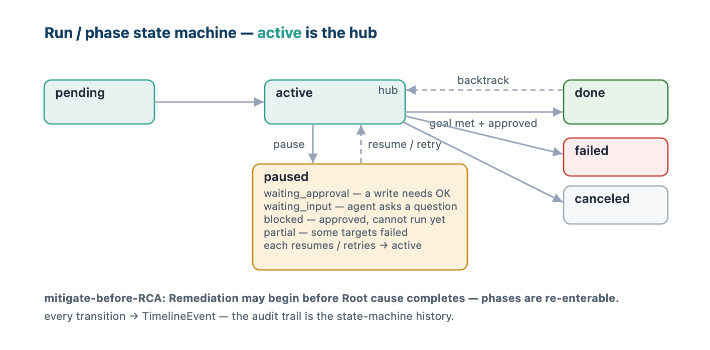
active is the hub — it pauses to wait on a human or a resource, completes or fails, and a done phase can backtrack to an earlier one.| Layer | States | Grounding |
|---|---|---|
| Incident lifecycle human-facing status | New → In Progress → (On Hold) → Resolved → ClosedOn Hold carries a reason: awaiting-change / awaiting-vendor / awaiting-caller | ITIL incident states (exact names unverified — a starting vocabulary) |
| Run / phase engine status | pending → active → { waiting_input | waiting_approval | blocked | partial } → done | failed | canceled | StackStorm Orquesta / Rundeck execution states |
The two layers map, they don't compete. The incident state is the human status; the run/phase state is what the engine is doing. New = just ingested (§4.3) · In Progress = a run is active (Assess → Root cause → Remediation) · On Hold = the run is waiting_approval / waiting_input / blocked (carrying the reason) · Resolved = Verify passed · Closed = the operator confirmed resolution and closed it (Verify & close) — never automatic. One incident state can span several phases.
The transitions — and the scenarios to cover end-to-end:
| Scenario | What happens |
|---|---|
| Normal advance | active → done when the goal is met and the operator approves; the next phase goes pending → active, prior context carried forward. |
| Approval gate | A write puts the phase in waiting_approval; approve → active proceeds, deny → canceled (or re-plan). Recorded in approval{actors[]}. |
| Mid-run input | An agent needs information → waiting_input; the operator answers → back to active (A2A two-way tasks, §3.10). |
| Blocked after approval | Approved, but the action can't run — resource unavailable, agent can't act, quota, timeout → blocked. The error_handler fires → retry / escalate / hand to manual. Approval ≠ success — this is the gating gap you flagged. |
| Partial success | A multi-target fix half-applies → partial; an action with an array input (e.g. nodes[]) splits per item, so the engine retries only the failed items (per_item_results[]), or compensates/undoes the applied ones (saga). |
| Sub-agent fails | An A2A sub-agent's task is an Action like any other — if it errors or times out it goes failed / blocked and the phase's on_failure + error_handler apply. No special path. |
| On-failure policy | Per the playbook: fail-immediately (stop the phase) or run-remaining (finish independent steps, then report). Grounded in StackStorm Orquesta. |
| Mitigate before RCA | Remediation runs before Root cause finishes — mitigate now, diagnose after. Phases are re-enterable, so this is a legal transition, not an exception. |
| Backtrack | A done phase re-opens an earlier one: Verify fails → reopen Root cause; Remediation shows the cause was wrong → back to Root cause. The earlier phase goes done → active again. |
Every transition is recorded as a RunEvent (§5.8) — the audit trail is the state-machine history — and projected to the human-facing TimelineEvent (§5.5). Checkpoints make every paused state durable and resumable.
5.8 The engine runtime model — run, action, event, checkpoint
What the engine needs to run a playbook and to recover: the durable run, the per-phase execution, the action (a governed capability call), the append-only event log, and the checkpoint. This extends §5.5 with the execution-level entities. Control plane in Postgres; large payloads / evidence in Mongo + object store (§5.1).
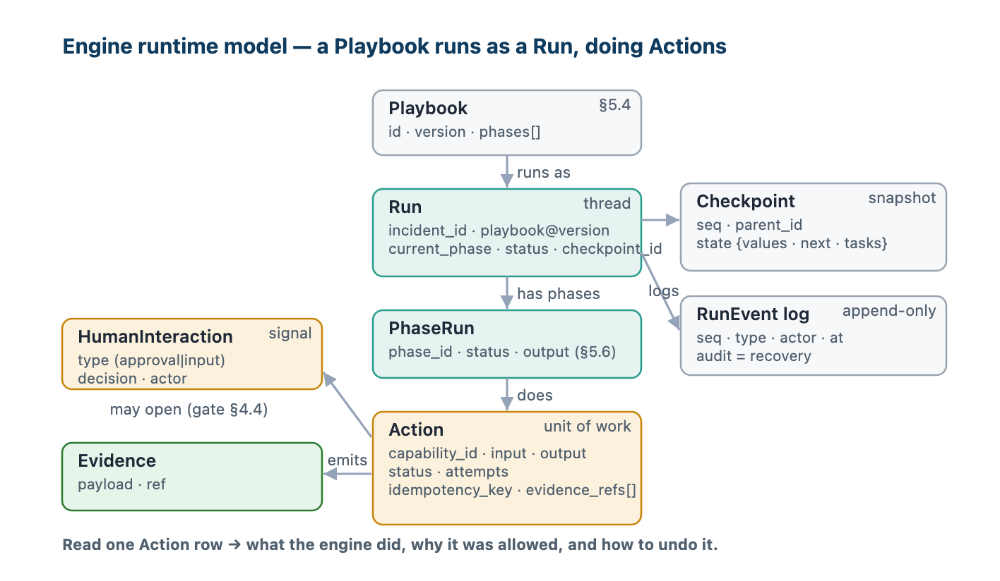
| Entity | Key fields | Grounded in |
|---|---|---|
Run (= Session, §5.5) | id · incident_id (FK) · playbook@version · current_phase · status · checkpoint_id (FK) · leases[] · started_at · updated_at | LangGraph thread |
PhaseRun (= PhaseResult) | id · run_id (FK) · phase_id · status · plan · output (typed, §5.6) · report | phase = sub-graph |
Action (the unit of work) | id · run_id (FK) · phase_id · capability_id (FK) · input · output · status (pending|running|done|failed|blocked) · attempts · idempotency_key · interaction_id (FK?) · evidence_refs[] · started_at · ended_at | Temporal activity / Conductor task |
RunEvent (append-only log) | id · run_id (FK) · seq · at · type · actor · payload · ref | Temporal event history |
Checkpoint (durable snapshot) | id · run_id (FK) · phase_id · seq · state {values · next · tasks} · created_at · parent_id | LangGraph StateSnapshot |
HumanInteraction (the signal, §5.5) | type (approval|input) · capability_id (FK) · decision · actor | Temporal signal |
RunEvent is the control-plane append-only log in Postgres — the engine's source of truth and recovery log. TimelineEvent (Mongo data-plane, §5.5) is the human-facing projection of it that the UI timeline and audit read: one is the machine record, the other the readable story.
How playbook, session, and action relate — the spine:
The Action is the single chokepoint where everything the design promises converges: it names a capability_id (the registry resolves the provider + kind, §5.3), it passes the governance gate (§4.4) — which may open a HumanInteraction — it carries an idempotency key (writes are exactly-once, §4.6), it records attempts (retries are bounded), and it emits Evidence + a RunEvent (the audit is complete). Read one Action row and you can reconstruct what the engine did, why it was allowed, and how to undo it. Audit scope: every Action (capability · input · output · approval · evidence) and every RunEvent are captured, plus the operator chat (§6.2). The model's intermediate reasoning is summarized in the chat narration, not stored as a verbatim token trace — the audit answers what was done, why it was allowed, and how to undo it, which is the bank-grade bar.
5.9 A worked run-capture — one incident, the actual rows
To prove the model end-to-end, here is INC-4821 / payments-api (the incident from the §6.2 console) as the actual rows the engine writes. Intake (§4.3) created the incident and opened a Run; the Run drove the four phases; each wrote a PhaseRun, its Actions, their Evidence, a Checkpoint, and RunEvents.
| Phase | Rows written |
|---|---|
| Assess | PhaseRun(assess, done) · Actions servicenow__incident.read · appd__flowmap.read · changelog__read · 3 Evidence · AssessResult · ckpt #1 |
| Root cause | PhaseRun(root-cause, done) · Actions appd__metrics.read · logs__search · 2 Evidence · RootCauseResult (conf 0.86) · ckpt #2 |
| Remediation | PhaseRun(remediation, waiting_approval → done) · Action k8s__rollback + HumanInteraction(approval) · 1 Evidence · ckpt #3 |
| Verify & close | PhaseRun(verify-close, done) · Action synthetic__replay · 1 Evidence · VerifyResult · incident → Closed |
The Remediation phase, row-by-row — the gate, the approval, the idempotent write, and the log:
Run { id: run_8f2, incident_id: "INC-4821", playbook: "incident-triage@1.0.0",
current_phase: "remediation", status: "done", checkpoint_id: ck_3 }
PhaseRun { id: pr_3, run_id: run_8f2, phase_id: "remediation", status: "done" }
Action { id: act_7, run_id: run_8f2, phase_id: "remediation",
capability_id: "k8s__rollback",
input: { service: "payments-api", to_revision: "v811" },
idempotency_key: "run_8f2:remediation:k8s__rollback:payments-api:v811",
status: "done", # pending → waiting_approval → running → done
attempts: 1, interaction_id: hi_2,
evidence_refs: [ev_6], started_at: "…14:07Z", ended_at: "…14:09Z" }
HumanInteraction { id: hi_2, run_id: run_8f2, type: "approval", capability_id: "k8s__rollback",
action_payload: { service: "payments-api", to_revision: "v811",
blast_radius: "1 service", rollback_plan: "redeploy v812" },
decision: "approved", actor: "jdoe@bank", at: "…14:06Z" }
Evidence { id: ev_6, kind: "command_result", source_capability: "k8s__rollback",
ref: "s3://evidence/run_8f2/ev_6.json", captured_at: "…14:09Z" }
RunEvent log #11 action.proposed act_7 (k8s__rollback) actor: engine
#12 approval.requested hi_2 actor: engine
#13 approval.granted hi_2 → "approved" actor: jdoe@bank
#14 action.started act_7 actor: engine
#15 action.done act_7 → evidence ev_6 actor: engine
#16 phase.done remediation actor: engine
Checkpoint { id: ck_3, run_id: run_8f2, phase_id: "remediation", seq: 3,
state: { values: { root_cause: "deploy v812", fix: "rollback → v811" },
next: ["verify-close"], tasks: [] },
parent_id: ck_2 }
RunEvent log top-to-bottom and you reconstruct the incident: proposed → who approved → executed → evidence. The idempotency_key means a retry or a crash-replay of the rollback runs once (§4.6). The Checkpoint is where a resume or a backtrack restarts. This is the §5.5–§5.8 model, instantiated.6 The operator UI
The UI is the human surface of everything in §1–§5 — our own console, not Amelia's. One web workbench, role-gated by AD group (§4.4). Its defining property: it is read models projected over the data model (§5) — it stores no state of its own. The approval card is the HumanInteraction (§5.5); the timeline is the RunEvent log (§5.8); the incident context is the AssessResult (§5.6); the registry screen is the declared-vs-granted pair (§5.3). The UI therefore cannot drift from the engine — every screen is a view of something the design already defines, and every action it offers goes back through the engine + the governance gate, never around them.
6.1 The workbench — one app, three sections
There is one UI: the workbench — our integrated production environment, in the Claude-Desktop three-pane shape. A left session / incident sidebar, a center conversation (the chat — where the approval gate appears), and a right panel for the plan, phases, and information (§6.2). It is where all the work happens, and it evolves with the operator as autonomy is earned (§1.3). The functions below are views within this one app — a panel or a tab — never separate applications.
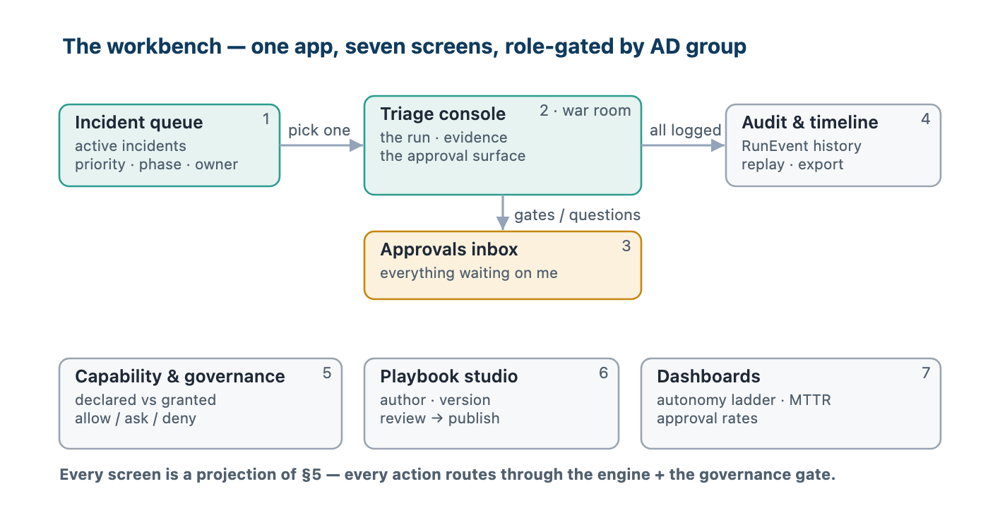
| View (in the one app) | What it's for | Surfaces (component) |
|---|---|---|
| 1 · Incident queue | The triage inbox — every active incident: priority, severity, service, phase, autonomy mode, owner, age, what's waiting on a human. Filter, sort, pick one. | Incident + Run (§5.5) |
| 2 · Triage console (war room) | Drive one incident: the live run, the agent's investigation, evidence, the approval surface, phase progress. §6.2. | the engine + the run (§4.6, §5.8) |
| 3 · Approvals inbox | Everything waiting on me, across all incidents — approve a write, answer a question — with the full plan to review first. | HumanInteraction (§5.5) |
| 4 · Audit & timeline | The complete, append-only history of an incident: who did what, when, and why it was allowed. Replay / export for compliance. | RunEvent log (§5.8) |
| 5 · Capability & governance | The registry: declared vs granted; set allow / ask / deny per capability by AD group; see the ask-history sensor that tunes policy. | capability layer (§5.3, §4.4) |
| 6 · Playbook studio | Author, version, and review-before-publish a playbook — phases, capabilities, gates, confidence thresholds. | playbook (§5.4, §3.5) |
| 7 · Dashboards | Fleet view: autonomy-ladder progress (assisted → autonomous), MTTR, approval rates, capability usage, backtrack frequency. | aggregates over runs |
6.2 The triage console & the approval surface
The one screen that matters most — in fact the only UI. In the Claude-Desktop three-pane shape (a session sidebar · a central conversation · a side panel), it is where a human watches the engine think and decides at the gates, and it evolves with the operator: as a capability earns autonomy (§1.3), the same console shifts that step from "approve each" toward "supervise" — the layout stays, the governance dial moves.

- The incident (left) — the selected incident's live card (service, severity, priority, blast radius, SLO burn, unhealthy dependency, recent change) and its relationships: parent (major incident), related, and chained-to-prior incidents (§5.5).
- The entire-incident chat (center) — the whole incident's conversation, not one phase: dividers mark each phase (Assess · Root cause · …); the agent's steps + clickable evidence, its suggestions, and the operator's replies all flow here; a composer lets the operator reply or consult another human (@dba). Everything is logged.
- The approval, inline — a write gate posts a card in the chat: the proposed Action (capability · input · blast radius · rollback · the root cause it follows) with Approve · Refine · Deny — reviewed before authorizing, never a bare yes/no.
- Phases → steps → output (right) — each phase expands to its steps (✓ / ⧗ status), and every step shows its output object (AssessResult, CHG-77, RootCauseResult …). Every step is a tool call + evidence, logged — the universal record (§5.8).
Grounded in: Microsoft Security Copilot guided responses (recommended actions + click-through evidence) and Azure observability-agent chat investigation; human-in-the-loop pre-execution approval + review-the-plan multi-tier oversight (operators authorize the plan, the engine executes with bounded autonomy); incident.io war-room (real-time, high-contrast for shared screens).
The same console handles every scenario — approve / refine / deny, a blocked action's error-handler, consulting another human, a backtrack, a multi-app topology walk, related-incident linking, declaring an outcome — they are states of this one workbench, surfaced in the same three sections, not separate pages.
6.3 The UI data model — read models over §5
Every screen is a projection (CQRS-style read model) of the entities in §5 — no new persistent state. The UI acts only by resolving things the engine owns: an approval/answer resolves a HumanInteraction; a backtrack or cancel emits a RunEvent the engine consumes. Writes always travel through the engine and the gate.
| View model | Projected from | Screen |
|---|---|---|
IncidentListItem | Incident + Run + count(pending HumanInteraction) | queue, dashboards |
ConsoleView | Incident + Run + current PhaseRun + RunEvents + AssessResult + pending HumanInteraction | triage console |
TimelineItem | RunEvent (at · type · actor · summary · evidence_ref · action_ref) | console, audit |
ApprovalCard | HumanInteraction + its Action (capability · input · blast_radius · rollback) | console, approvals inbox |
EvidenceItem | Evidence (kind · source_capability · payload/ref → citation) | console, audit |
RegistryRow | DeclaredCapability + CapabilityPolicy (effect · declared · granted · ask-history) | capability & governance |
DashboardMetric | aggregates over Run / Action / HumanInteraction | dashboards |
6.4 UI use cases — validated end to end
| The operator… | …and the UI |
|---|---|
| Triages the queue | Opens the queue, sorts by priority, picks a P1 → the triage console. |
| Watches the assessment | Sees Assess populate the context panel, then Root cause propose ranked candidates with evidence (§5.6) — opens a citation to verify. |
| Approves a remediation | A write gate fires → reviews the plan + blast radius + rollback → Approve (or Refine the input, or Deny). The decision is recorded on the HumanInteraction. |
| Answers the agent | An A2A input-required pauses the run → answers inline → the run resumes (§4.6). |
| Handles a block | A blocked-after-approval (§5.7) shows the error-handler options — retry / escalate / hand to manual. |
| Backtracks | Verify fails → triggers a jump back to Root cause; the phase rail shows the re-entry. |
| Clears the approvals inbox | Reviews everything waiting across incidents in one place, each with its plan. |
| Tunes a policy | In governance, sees a capability's ask-history, then promotes it ask → allow for an AD group (§4.4). |
| Publishes a playbook | In the studio, edits a version, sends it for review, publishes — the engine picks up playbook@version on the next run (§3.5). |
| Reviews the fleet | On the dashboard, tracks how much of the work has climbed the autonomy ladder (§1.3) — the crawl → walk → run story, measured. |
7 Build, operate & open items
7.1 Engine topology & scale
v1 = a modular monolith, scaled by running N stateless replicas behind a load balancer. No microservice split, no Kafka/Redis in v1; modular seams allow later extraction without a rewrite. Backing stores: Postgres (control plane — checkpointer, work queue, registry, audit) + MongoDB (data plane — incidents, evidence, timeline). A thin repository layer hides the split.
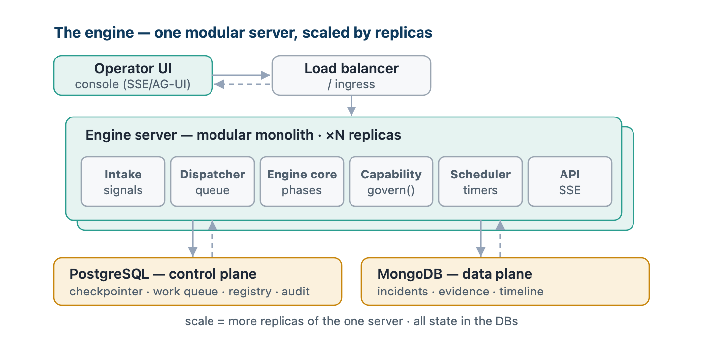
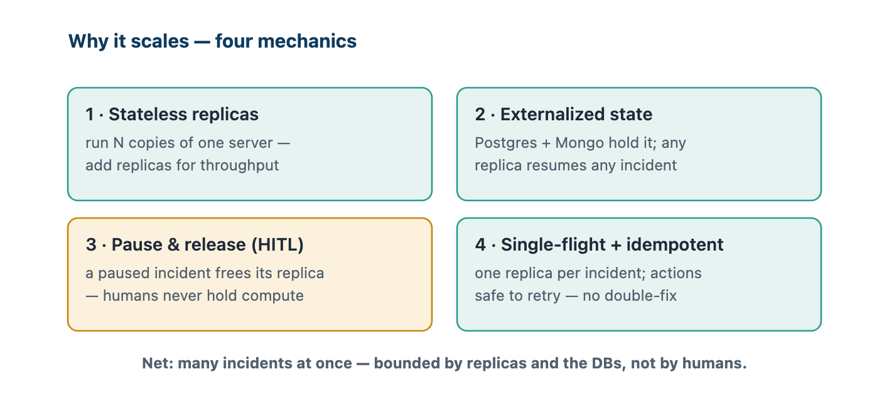
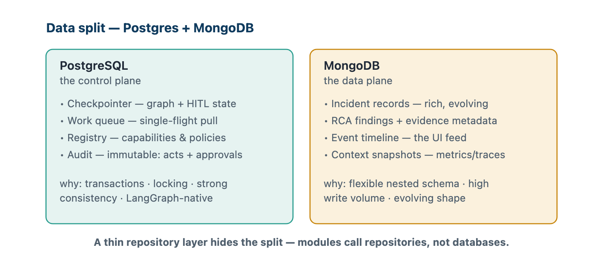
7.2 Deployment
Kubernetes — one image, one Deployment + HPA, two managed DBs, object store (evidence), OTel → SIEM/Langfuse. The scheduler/timers module uses leader-election so timers fire once across replicas.
7.3 Framework & lock-in posture
LangGraph (MIT, open-source) for orchestration — most mature for stateful, checkpointed, human-gated pipelines. Use the OSS library + Postgres checkpointer + Langfuse; never adopt the proprietary LangSmith → zero license lock-in. Credible alternatives if the org pivots: Pydantic AI (lowest lock-in) and Microsoft Agent Framework (enterprise/Azure). Custom UI uses AG-UI over SSE. Principle: own the domain, rent the orchestrator — keep phases, incident model, capabilities, and governance framework-agnostic so the choice stays reversible.
7.4 Open items / next steps
- Confirm: Slack/Teams bridge · the AD groups that gate each domain · the stack (queue tech, managed Postgres/Mongo, K8s distro).
- Bank-grade hardening (its own pass — gates production writes) — secrets & encryption, immutable audit, failure-mode + DR (RTO/RPO), input / injection validation, the test strategy (dry-run / shadow).
- From the design audit — flesh the feedback → autonomy promotion thresholds (org policy, §1.3); a consult-a-human TTL + escalation + ACL; specify the synthetic.replay capability + per-stack tool mappings (AppD → Datadog / Dynatrace, Splunk → ELK …); the relationship-detection mechanism (a correlation step in Assess); and standardize the
capability_idnotation across all examples (provider__action). - Later passes — multi-domain governance (one engine, many playbooks) · data portability / schema export.
- Build: scaffold the engine + the UI (§6) to this design. Resync the Word doc /
build.js(HTML is the source of truth).
7.5 Revision history
The data model and design are versioned; each substantive change bumps the version and adds a row.
| Version | Date | Summary |
|---|---|---|
| v0.1 | 2026-06-15 | Initial platform design — vision, phases, workbench, playbook, capability layer, engine, first data model. |
| v0.2 | 2026-06-16 | Capability data model finalized — declared vs granted; effect/access; the default matrix; the ER diagram. |
| v0.3 | 2026-06-17 | Storage = Postgres (control plane) + MongoDB (data plane); access model simplified to AD-group + allow/ask/deny (dual approval dropped); doc restructured to Goal → Components → Actions → Interactions → Data model → Build. |
| v0.4 | 2026-06-17 | Capability-layer use cases — all five kinds worked end-to-end (§3.6–3.11); session & resource lifecycle (§4.5); data model validated complete; document versioned. |
| v0.5 | 2026-06-17 | Playbook redesigned to four re-enterable phases (Assess · Root cause · Remediation · Verify, §3.1); per-phase data models added (typed core + JSONB, §5.6); incident & run state machine added (§5.7 — blocked-after-approval, partial/retry, mitigate-before-RCA, backtrack). Each phase model grounded in the incident-mgmt / observability tools; playbook evolves with the enterprise's capabilities (assisted → autonomous). |
| v0.6 | 2026-06-17 | Engine designed — durable execution & recovery (§4.6: checkpoints, append-only event log, pause/resume, crash recovery, retry, idempotency / exactly-once, backtrack, concurrency) with end-to-end use cases; the engine runtime data model (§5.8: Run · PhaseRun · Action · RunEvent · Checkpoint) capturing playbook → run → action. Grounded in Temporal / LangGraph / Netflix Conductor. |
| v0.7 | 2026-06-17 | Operator UI designed (§6) — one workbench, seven screens; the triage console + the inline approval surface (the gate in the conversation); the UI data model as read-models projected over §5; UI use cases validated end-to-end. Doc restructured (UI = §6, Build/operate = §7). Grounded in MS Security Copilot / incident.io / human-in-the-loop approval patterns. |
| v0.8 | 2026-06-17 | Core design completed — playbook deep-dive (full front-matter schema + validation rules §5.4; authoring/lifecycle + a complete reference playbook §3.5); a worked run-capture showing the actual rows one incident writes (§5.9); alert→incident ingestion (§4.3). Consistency fixes: min_confidence scope, on_complete, phase↔ITIL mapping (§5.7), RunEvent vs TimelineEvent (§5.8), capability_id syntax (§5.3). Bank-grade hardening deferred (§7.4). |
| v0.9 | 2026-06-17 | Re-anchored as the High-Level Design (HLD); clarified the incident-triggered, chat-driven, MIM-aligned framing (§1.1); added the delegation-narrows-never-widens principle — specialist agents / Amelia / BladeLogic / new APIs are governed A2A/API capabilities (§1.4). Developer detail moves to the companion Low-Level Design (LLD). |
| v1.0 | 2026-06-17 | KISS audit (both docs, simple-but-powerful): tied sub-agent failure to on_failure / error_handler (§5.7), unified Run = Session (§5.5), made governance policy sticky across provider re-syncs (§5.3), pinned on_complete timing + draft-lint semantics (§3.5), clarified multi-target retry split (§5.7). Companion LLD taken to a buildable v0.2 — core types + the govern() decision rule, the repository split, the A2A write-callback. |
| v1.1 | 2026-06-17 | Operator console redesigned to the three-region layout (incident · current-phase chat with approvals + suggestions · plan + audit), Claude-desktop style (§6.2). Playbook: closing is now a human action, not an auto on_complete hook; added a retry policy (transient errors, max 1–10 + backoff; permanent → escalate, §3.5/§5.4) and a playbook-level unknown_access default for unknown-effect capabilities (§5.3/§5.4). LLD → v0.3. |
| v1.2 | 2026-06-17 | Review round (all HTML): console center is now the entire-incident chat, right is phases → steps → outputs (§6.2); data model reworked for multi-app / cross-layer (affected_services[] + topology), incident relationships (parent/child/related/chained × user/servicenow/ai), the universal tool-call + evidence spine, and a separate feedback model (§5.5/§5.6); per-phase operations (questions · tools · steps, §3.1); a full-scenario UX board (§6.2). New companions: the Management Brief + the Delivery Plan. LLD → v0.4. |
| v1.3 | 2026-06-18 | Build-out + full audit: a proper system component diagram (boxes-in-boxes + connectors, in the brief); a detailed triage runbook (per-phase questions · tools · data, growing record) + a standalone incident-triage.playbook.md; the delivery plan reworked by sprint (Gantt + Amelia ramp-down). Audit fixes: error_handler escalation routing (§5.4), earned-autonomy promotion rules (§1.3), audit scope clarified (§5.8), VerifyResult enriched (§5.6); remaining items tracked in §7.4. |